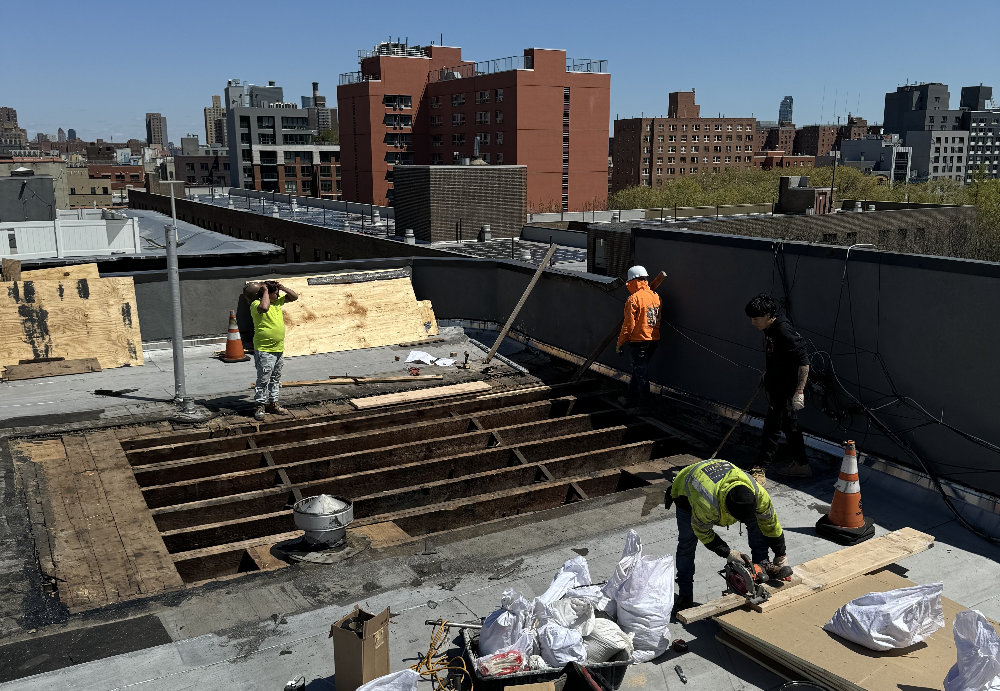

At Sirgee Construction Company, we deliver concrete solutions that combine durability, precision, and clean finishes. Whether you need a fresh driveway, a smooth patio, or structural concrete for a new foundation, we’re equipped to handle it — start to finish.
From small residential pours to larger structural work, we ensure that every project is built to last and finished with care. No cracks, no shortcuts — just quality you can see and strength you can count on.
You Name it, We got it!
- 🚧 Concrete Flatwork : We specialize in smooth, level concrete flatwork for all types of surfaces, including driveways, sidewalks, garage floors, patios, and walkways. Whether it’s a new install or a replacement, we handle every step — from forming and pouring to finishing and sealing.
- 🧱 Concrete Slabs & Foundations : Our team pours strong, well-reinforced slabs for basements, garages, sheds, and other structures. We also construct reliable foundation walls using either poured concrete or block work, ensuring structural integrity and code compliance from the ground up.
- 🎨 Stamped & Decorative Concrete : Looking for something beyond plain gray? We offer stamped and textured concrete options that mimic stone, brick, or tile — perfect for patios, pool decks, or walkways. With various colors and patterns available, we can help you achieve the look you want with the durability of concrete.
- 🛠️ Concrete Repair & Resurfacing: If your existing concrete is cracked, worn, or uneven, we provide repair and resurfacing services to restore it without a full replacement. From patching to leveling and sealing, we help breathe new life into old surfaces and improve safety and appearance.
Why Choose Sirgee for Concrete Work?

- ✔️ Experienced Crews: Years of concrete knowledge, from prep to pour to finish.
- ✔️ Clean, Level Finishes: No uneven spots, rough edges, or sloppy seams.
- ✔️ Quality Materials: We use durable mixes designed for strength and longevity.
- ✔️ Reliable Scheduling: We show up on time and finish projects without delays.
- ✔️ Custom Work: Whether basic or decorative, we build to your style and specs.
From walkways and driveways to slabs and foundations, Sirgee Construction Company delivers clean, tough, and long-lasting concrete work you can rely on.
📞 Contact us today for a free concrete estimate — let’s build something solid together.